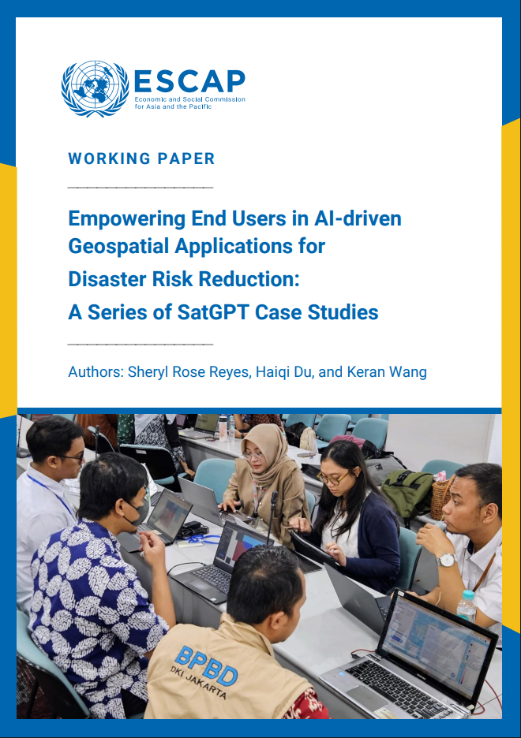
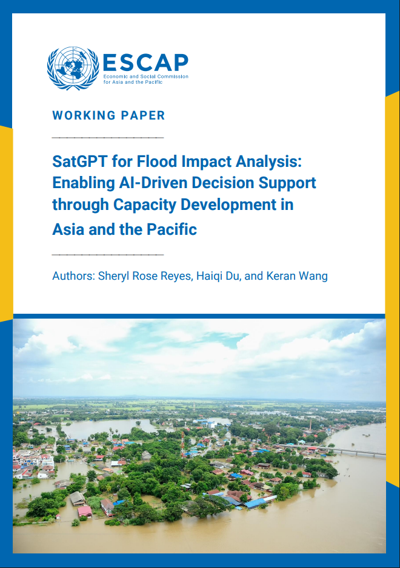
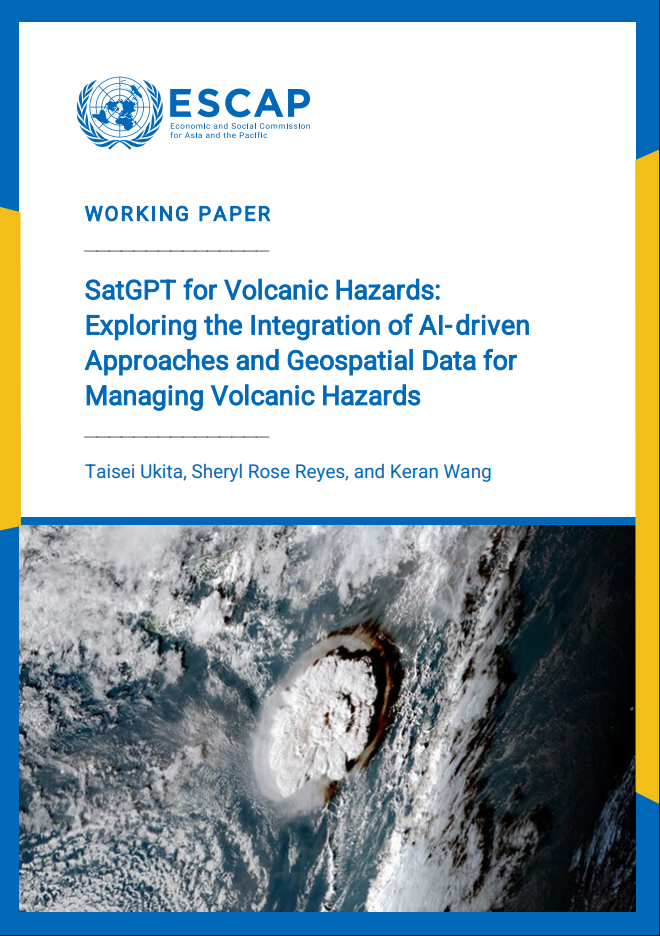
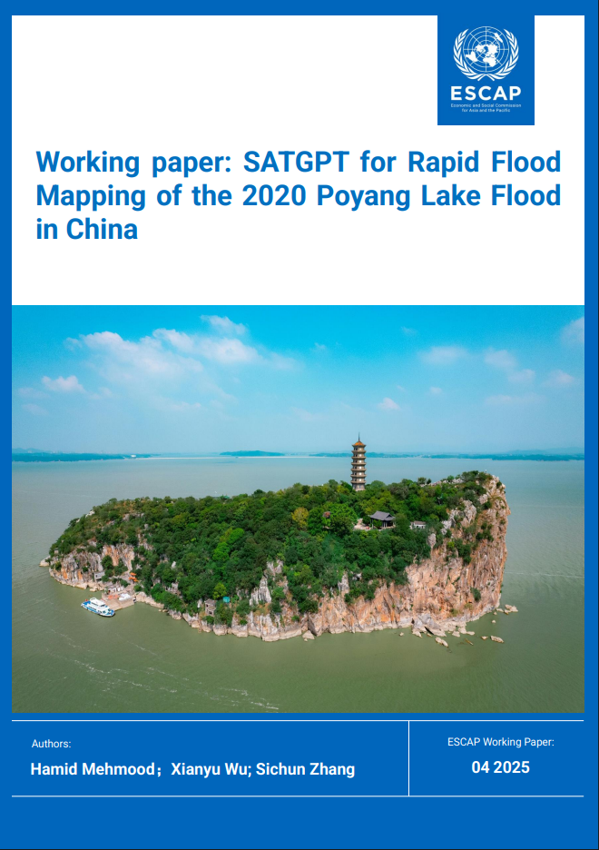
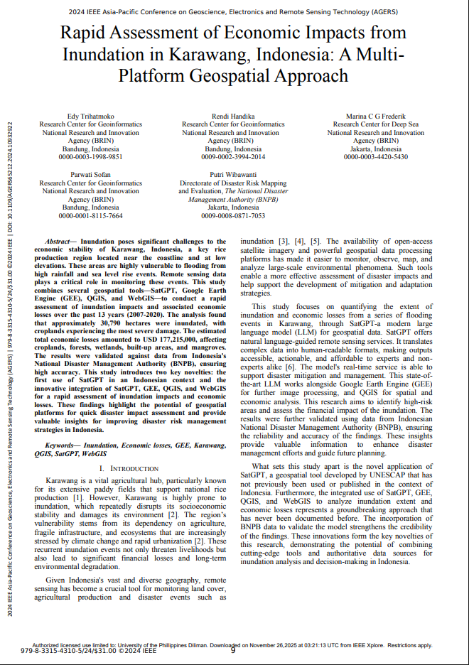
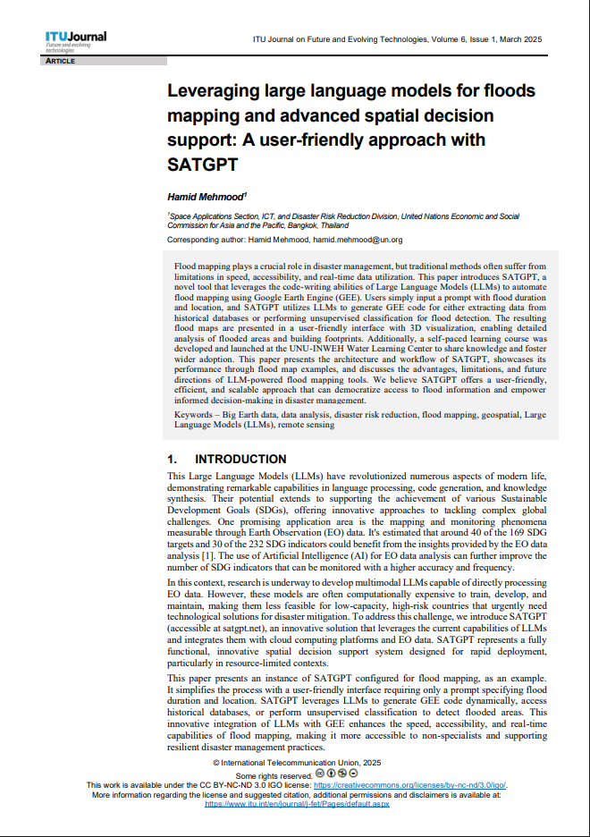

Working Paper
Empowering end users in AI-driven geospatial applications for disaster risk reduction: a series of SatGPT case studies
December 2025
hdl.handle.net/20.500.12870/8973

Working Paper
SatGPT for flood impact analysis: enabling AI-driven decision support through capacity development in Asia and the Pacific
December 2025
hdl.handle.net/20.500.12870/8972

Working Paper
SatGPT for Volcanic Hazards: Exploring the Integration of AI-driven Approaches and Geospatial Data for Managing Volcanic Hazards
November 2025
hdl.handle.net/20.500.12870/8600

Working Paper
SatGPT for rapid flood mapping of the 2020 Poyang Lake flood in China
April 2025
hdl.handle.net/20.500.12870/8041

Peer-Reviewed
Rapid Assessment of Economic Impacts from Inundation in Karawang, Indonesia: A Multi-Platform Geospatial Approach
December 2024
10.1109/AGERS65212.2024.10932922

Peer-Reviewed
Leveraging large language models for floods mapping and advanced spatial decision support: A user-friendly approach with SATGPT
October 2024
doi.org/10.52953/FEGZ5064
Conference papers will be added soon.